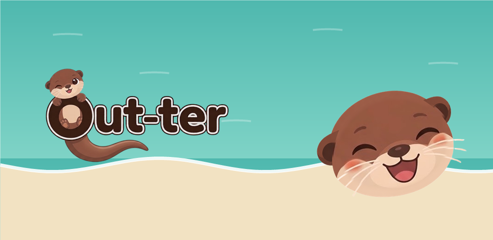
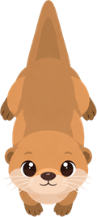
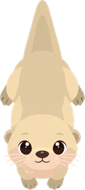
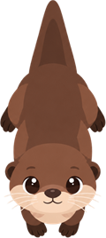
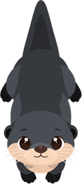
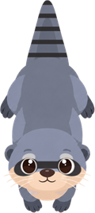
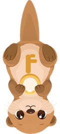
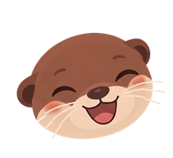
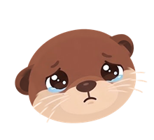

Out-ter
Out-ter

Libera le lontre dallo stagno
Un puzzle rilassante da giocare con un dito. Ogni lontra nuota dritta, nella direzione della sua testa: trova l'ordine giusto.
Presto su Google PlayCome si gioca
Tocca una lontra: se niente le sbarra la strada, esce dallo stagno e finisce nella tua rete. Tre lontre dello stesso colore nella rete? Se ne vanno insieme e liberano spazio. Ma se la rete trabocca, la partita è persa. Pensa all'ordine, libera i percorsi e svuota lo stagno.






Tranquillo, con una mano
- Un solo gesto: toccare.
- Niente cronometro, niente pressione.
- Partite brevi, perfette per una pausa.
200 livelli e bonus
- Una mappa che risale il fiume, attraverso nove paesaggi.
- Tre stelle da conquistare in ogni livello.
- Rami bonus da esplorare.
La sfida del giorno
- Tre griglie ogni giorno: facile, media e difficile.
- Un calendario tiene traccia dei giorni superati.
La modalità competizione
- Ondate di lontre senza fine.
- La classifica della settimana.
Un'idea nuova in ogni capitolo
Lontre misteriose, ghiaccio che si scioglie, gabbie e chiavi, vortici, gemelle che escono insieme, correnti che trascinano tutto. La lontra che tiene la chiave apre la gabbia della sua lettera.



Una lontra ti accompagna
Spiega ogni novità al momento giusto e reagisce alla tua partita.
Gratis e rispettoso
- Nessun acquisto in-app: tutto si guadagna giocando.
- I video con ricompensa sono sempre facoltativi.
- I tuoi progressi restano sul tuo telefono.